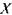
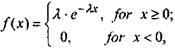
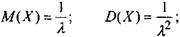
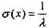
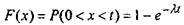
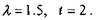
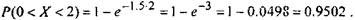

Показниковий розподіл
Розподіл Пуассона
- це розподіл для дискретної випадкової величини, яка приймає злічену
множину значень за певний проміжок часу з
ймовірностями, що визначаються за формулою Пуассона. Показниковий розподіл - це розподіл
ймовірностей для неперервної випадкової величини. Тоді як Пуассонівському розподілу
задовольняють інтенсивність появи випадкових подій (людей, вантажівок, телефонних дзвінків тощо) в
деякий проміжок часу, то показниковий розподіл оцінює
інтервал часу між появами подій.
Показниковому розподілу
задовольняють: час між двома замовленнями, що
слідують одне за одним, або час повного обслуговування одного покупця, час завантаження однієї вантажівки, час телефонної
розмови тощо. Випадкову величину

називають розподіленою за показниковим законом, якщо її диференційна функція
розподілу ймовірностей має вигляд

де Я - параметр
розподілу, який характеризує інтенсивність появи подій.
Математичне сподівання та дисперсія показниковогорозподілу обчислюється за формулами

та

(29)
Зауваження. Якщо
випадкова величина X розподілена
за показниковим законом, то її функція розподілу (інтегральна
функція розподілу) має вигляд

(30)
Приклад 7.
Платформи подаються під завантаження в середньому 1,5 за годину. Яка ймовірність, що не більше ніж 2 години пройде між
прибуттям двох платформ, що слідують одна за одною?
Розв'язання. Маємо

Тоді

Ймовірність, що друга платформа прибуде у межах двох годин за першою, дорівнює 95,02%.